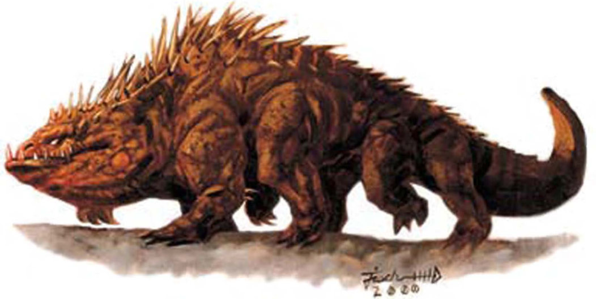
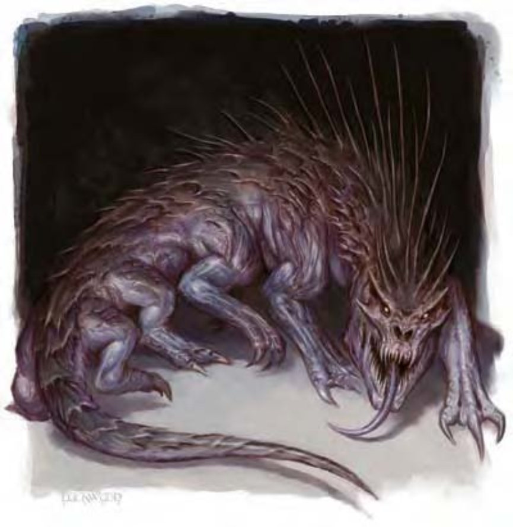

他们看起来像粗壮的爬行类动物，有八只脚。背上长着多排骨质尖刺，眼睛发出令人毛骨悚然的淡绿白热。
石化蜥蜴是爬行怪物，可通过凝视石化其他生物。若想在与石化蜥蜴的战斗中存活，得有万全准备或极好运气才行。
几乎所有气候的地区都可发现石化蜥蜴，地底也有。他们倾向在浅穴、山洞或其他有遮蔽的地形筑巢。若发现某洞口有生物石像，就可能是石化蜥蜴巢的入口，那些生物石像就是误闯而遭石化的生物。石化蜥蜴为杂食性，可以吃被石化的受害者。若够有钱或魔法能力够强，便可捕捉驯养石化蜥蜴当作守卫，非常好用。
石化蜥蜴躯体为暗棕色，下腹部略带黄色。某些品种鼻尖长有短弯角。成年石化蜥蜴躯体可至约6英尺长，不包含尾部，尾部本身就有5至7英尺长。约300磅重。
战斗石化蜥蜴倚重视凝视攻击。啮咬只在敌人进入近距离才派得上用场。虽然有八只脚，但缓慢的新陈代谢让石化蜥蜴无法快速动作。也因此，除非必要，石化蜥蜴不愿消耗精力。闯入者遇到石化蜥蜴时，若不战斗而选择逃跑，石化蜥蜴通常没兴趣追。
石化蜥蜴倾向把时间花在静躺等待猎物。猎物包括小型哺乳类动物、鸟类、爬行类动物或其他类似生物。不猎食时，他们通常选择睡眠，消化最近吃到的一顿。石化蜥蜴偶尔形成小聚落，以便交配或在危险环境下相互防御。此时，石化蜥蜴聚落会协力攻击闯入者。
石化凝视（超自然）：永久变成石头，距离30英尺。通过强韧检定（DC=13）则无效。豁免DC的调整值与魅力调整值相同。
技能：*在自然环境下，石化蜥蜴在进行“躲藏”检定时因其暗淡体色与长时间保持不动的能力而具有+4种族加值。

在误闯他们位于深渊域的不毛栖息地或遇上暗黑术士进行召唤时，冒险者就可能会遭遇这些来自地底的魔族。恶魔经常以深渊高等石化蜥蜴当作守卫或护卫。
深渊高等石化蜥蜴进行石化凝视的豁免DC（DC=21）因其高HD与高魅力而有所调整。在计算伤害减免时，深渊高等石化蜥蜴的天生武器视为魔法武器。
破善斩（超自然）：每天1次，深渊高等石化蜥蜴可在对善良阵营敌人进行一般近战攻击时，造成18点额外伤害。
| 资料栏位 | 石化蜥蜴 中型魔法兽 |
深渊高等石化蜥蜴 大型异界生物（强力魔法兽、外界） |
|---|---|---|
| 生命骰 | 6d10+12 (45HP) | 18d10+90 (189HP) |
| 先攻 | -1 | -1 |
| 速度 | 20英尺 (4格) | 20英尺 (4格) |
| 防御等级 | 16 (-1敏捷、+7天生)、接触9、措手不及16 | 16 (-1体型、-1敏捷、+9天生)、接触8、措手不及17 |
| 基本攻击/擒抱 | +6 / +8 | +18 / +29 |
| 攻击 | 啮咬+8近战 (1d8+3) | 啮咬+25近战 (2d8+10) |
| 全力攻击 | 啮咬+8近战 (1d8+3) | 啮咬+25近战 (2d8+10) |
| 占用/触及 | 5英尺/5英尺 | 10英尺/5英尺 |
| 特殊攻击 | 石化凝视 | 石化凝视、破善斩 |
| 特殊能力 | 黑暗视觉60英尺、昏暗视觉 | 寒冷抗力10、火焰抗力10、伤害减免10/魔法、黑暗视觉60英尺、昏暗视觉、法术抗力23 |
| 豁免 | 强韧+9、反射+4、意志+3 | 强韧+18、反射+12、意志+8 |
| 属性 | 力量15、敏捷8、体质15、智力2、感知12、魅力11 | 力量24、敏捷8、体质21、智力3、感知10、魅力15 |
| 技能 | 躲藏+0*、聆听+7、侦察+7 | 躲藏+0*、聆听+10、侦察+10 |
| 专长 | 警觉、盲战、强韧加强 | 警觉、盲战、强韧加强、钢铁意志、精通天生武器（啮咬）、快速反射、专攻武器（啮咬） |
| 环境 | 热带沙漠 | 无底深渊 |
| 组织 | 单独或群落 (3-6) | 单独或群落 (3-6) |
| 挑战级数 | 5 | 12 |
| 宝藏 | 无 | 标准 |
| 阵营 | 总是绝对中立 | 总是混乱邪恶 |
| 进化 | 7-10HD (中型) ; 11-18HD (大型) | ― |
| 等级修正值 | ― | ― |